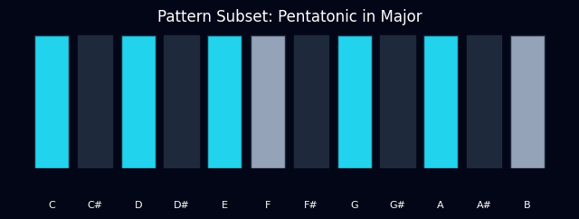
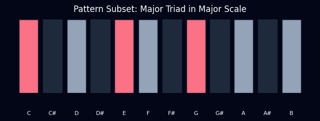

Systematic exploration of Pitch and Rhythm DNA.
Visualizing PitchClass sets within the 12TET system.

C Pentatonic (Cyan) as a subset of C Major (Gray).

C Major Triad (Rose) as a subset of C Major (Gray).